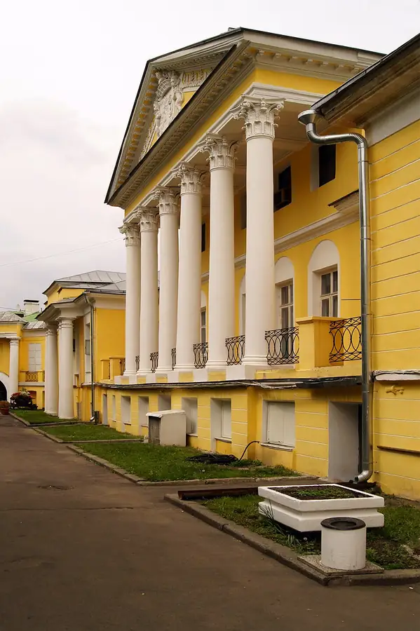

Фото: Stas Lobov, CC BY-SA 3.0 · Wikimedia Commons
Итальянский ресторан · ЦАО
Assunta Madre
Премиальный итальянский ресторан Новикова в усадьбе Долгоруковых.
- ₽₽₽ · дороже 3 000 ₽ на человека
- В гиде Michelin 2021
- в 1 плане
Позвать сюда: Assunta MadreОткрыть в каталоге: Assunta MadreМаршрут до места: Assunta Madre
Адрес и детали
- Адрес
- Поварская ул., 52/55, стр. 2
Открыть на Яндекс Картах (в новой вкладке) - Метро
- м. Баррикадная
- Округ
- Центр (ЦАО)
- Цена
- дороже 3 000 ₽ на человека
- Проверено
- работает — проверили в октябре 2026
Планы с этим местом 1
- Дом-музей Чехова · Музей · м. Баррикадная
- 5 минут пешкомAssunta Madre · Итальянский ресторан
Дом-музей Чехова, а потом итальянский ужин в Assunta Madre в старинной усадьбе на Поварской.
Открыть план: Чехов и ИталияПозвать сюда: Чехов и Италия
Фото: Olga North, общественное достояние · Wikimedia Commons

Похожие рядом
Что ещё рядом
Как позвать
- Выбери план, место или событие — в карточке адрес, цены и маршрут в Яндекс Картах.
- Нажми «Позвать сюда» — соберётся приглашение-игра для свидания или голосование для компании.
- Отправь ссылку в любой мессенджер: тебе ответят, а компания отметит, куда и когда может. Бесплатно и без регистрации.